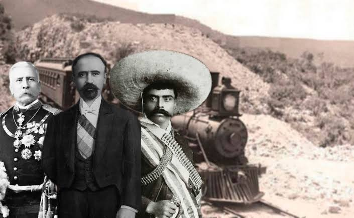

Texto: La Revolucion Mexicana inicio el 20 de noviembre de 1910. Francisco I. Madero se levanto contra Porfirio Diaz que llevaba 30 años en el poder. Lideres como Emiliano Zapata con su lema Tierra y Libertad y Pancho Villa en el norte lucharon por los campesinos. La revolucion termino con la Constitucion de 1917 que aun nos rige.
| Lider | Lema / Region |
| Emiliano Zapata | Sur - Tierra y Libertad |
| Pancho Villa | Norte - Division del Norte |
| Francisco I. Madero | Anti-reeleccionista |